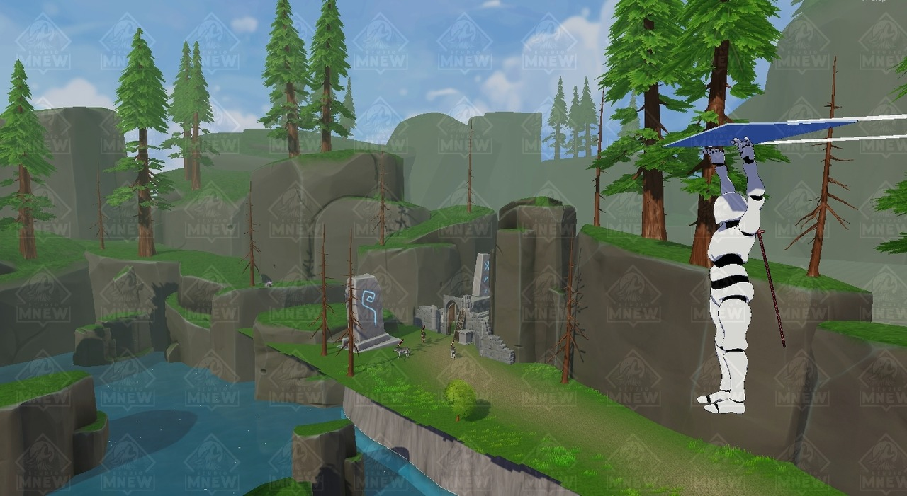

I needed a forest map that could believably house wolves — both as enemy NPCs and as a boss encounter. With the prototype NPCs and boss already built, I needed an environment to match their theme. So I started by gathering references.
Blockout Inspirations


After a few days of review, I went with the 2nd style — specifically the last image above. My picture in my head: a linear main path with enemies, plus a split-off path requiring light platforming and fewer enemies. Both paths meet at a point of interest leading to the boss arena.
Grey-Box
Here's that idea come to life — a large woodland area with two branching paths, a waterfall point of interest, a center island, and a red temple at the intersection leading to the boss arena.

After playtesting, the map felt simple and fun. I began replacing grey blocks with permanent environmental props.

Final Result
After many more passes adding grass, fog, foam lines for the waterfall, falling leaf particle systems, and more. Performance is sitting at ~150fps on low-end hardware at high graphical settings.




Boss Arena — Second Iteration
I went back to improve the flat, boring boss arena with a roman colosseum-inspired structure to make the moment feel cinematic. A roof was out of the question since it would break global lighting, so I focused on giant pillars and walls.

The central pillars felt boring on the sides, so I made them more central and added walls. Kept the three giant relics from the original blockout since they still fit the theme.


After applying the environment shader and adding blue particles near the relics, the arena was transformed without much extra work. Not Elden Ring quality, but I think it looks pretty cool.